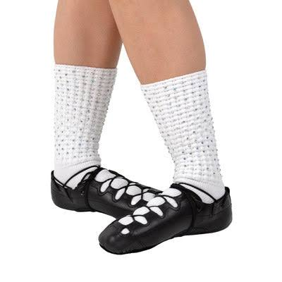
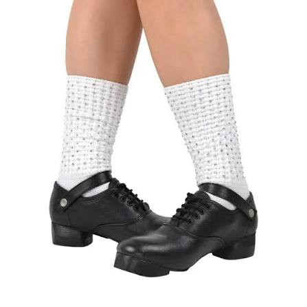
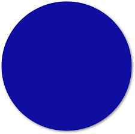
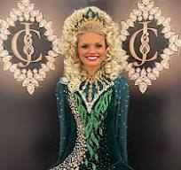
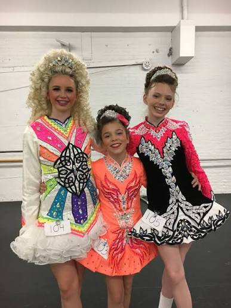

<!DOCTYPE html>
<html lang="en">
    <head>
        <meta charset="UTF-8">
        <link rel ="stylesheet" href="irish.css">
        <meta name = "viewport" content="width=device-width, initial-scale=1">
        <title>Irish Dance Explained</title>
      
        <script async src="https://www.googletagmanager.com/gtag/js?id=G-XXXXXXXXXX"></script>
        <script>
            window.dataLayer = window.dataLayer || [];
            function gtag(){dataLayer.push(arguments);}
            gtag('js', new Date());
            gtag('config', 'G-XXXXXXXXXX');
        </script>
        
        </head>
</html>

<header>
    <h1>Irish Dance Explained</h1>
</header>

<br>

<nav>
    <a href ="index.html">Home</a>
    <a href="past.html">Past</a>
    <a href = "present.html">Present</a>
    <a href = "dancers.html">Dancers</a>
    <a href="contact.html">Contact</a>
</nav>

<main>
    
<h2 class ="dancers-title"> Irish Dancers</h2>
<p>Now we have learned the history of Irish Dance from beginning to current, now we will take a look at what competitors may need to know to have the best chance of succeding!</p>
<br>

<h3>Shoes</h3>
<p>With Irish Dancing, there are two types of shoes that are worn. The first is a soft shoe, which resembles a combination between a jazz dance shoe and a sneaker that has a lot of laces. It is made of leather, and a few sizes smaller than a regularly worn shoe. Next, we have hard shoe, a shoe that resembles a tap shoe with a doorstop like wedge underneath the toe. This shoe is also made of leather and worn a few sizes smaller than a regular shoes.</p>

<div class="shoe-image-row">
    
    
</div>

<form action = https://www.keilys.com/irish-dance-shoes/?tw_source=google&tw_adid=461359056933&tw_campaign=11025104144&tw_kwdid=kwd-1290313087148&gad_source=1&gad_campaignid=11025104144&gbraid=0AAAAACPi4TubfcGU87ATBvCwIJN6EkAad&gclid=CjwKCAjw6rfSBhAqEiwA_yocpo9ClB7qJDp6BqD5YwJyFwvB6gV_4c91tEG5FIQcc-ORqLC5HCEXKxoCZyUQAvD_BwE>
    <input type="submit" value="Website For Irish Dancing Shoes" class="shoes-button">
</form>

<br>

<h3>Dances</h3>
<p>When a dancer first starts competiting, they will begin competing with four soft shoe dances and three hard shoe dances. The soft shoe dances are commonly performed as light and airy, flying throught the air. Hard shoe dances are more focused on rythm, technique, and beats. Tricks are performed with these dances as well, but they are focosued on samll technical movements insetad of flying through the air.</p>
<p>As a dancer progresses through the levels, the dance name and music used stays the same, while the dance moves themselves will change, becoming more intricate and difficult. Depending how far you advance, the dances themselves will diminish. This often involves moving focus on to the core dances (reel, slip jig, treble jig, hornpipe, and traditional set).</p>

<H3> Competitions Levels</H3>
<p>In an irish dancing competition, we start with the first level "first feis". We then move to Beginner 1, Beginner 2, Novice, and then Prizewinner. These levels are known as "the grades". It is possbile for a dancer to progress at different paces with their multiple dances, the reel for example can be deemed beginner 1, while their slip jig can be deemed prizewinner. Commonly, you have to place 1st, 2nd, or 3rd, to move up to the next level. At the end of the day, it is up to your dance teacher when you move up to the next level.</p>
<p>After the grades, we have the next two levels (called "the championships") which are preliminary champion, and open champion. With these two levels, two to three dances are danced depending on your brithday. A dancer will either dance the reel or the slip jig, and then the treble jig or the hornpipe. The reel and the treble jig are danced to the same speed of music, while the reel is soft shoe and the treble jig is hardshoe. The same is said of the slip jig and the hornpipe. A championship dancer will typically not compete in two core dances with the same speed of music. Then, they will compete in only one soft shoe dance, and only one hardshoe dance (with the traditional set being the hardshoe exception).Dancers may also dance the traditional set, a hardshoe dance that holds a lot of tradition and history, and can be a dance for dancers to display their talents. </p>
<p> Unlike the other dances, for a traditonal set dance, many many dances fit under this category. Names such as st. patricks day, three sea captains, drunk gaeger, and so many more fit into this category. With each different traditional set, there is specific music for the dance that is played, but this music can be danced at different speeds. Overall, the traditional set is a dance where a dancer can showcase their skill outside of the core dances. </p>

<br>

<H3>Competitions Levels and Dances</H3>
<table>
      <p>Here we have a chart displaying which dances are danced at each level. As the levels gain more difficulty, the dances dancers compete in may change and adjust. The shamrock indicates which dance is danced in each level. For the championship levels, the two dances that are danced together, both have the same color dot. Only these two dances are danced for a year, then they change to the other two based on birth year.</p>
    <tr>
        <th></th>
        <th>Beginner 1</th>
        <th>Beginner 2</th>
        <th>Novice</th>
        <th>Prizewinner</th>
        <th>Preliminary Champion</th>
        <th>Open Champion</th>
    </tr>
    <tr>
        <td style="font-weight: bold">Reel</td>
        <td>  </td>
        <td></td>
        <td></td>
        <td></td>
        <td></td>
        <td></td>
    </tr>

     <tr>
        <td style="font-weight: bold">Light Jig</td>
        <td></td>
        <td></td>
        <td></td>
        <td></td>
        <td></td>
        <td></td>
    </tr>

     <tr>
        <td style="font-weight: bold">Slip Jig</td>
        <td></td>
        <td></td>
        <td></td>
        <td></td>
        <td></td>
        <td></td>
    </tr>

     <tr>
        <td style="font-weight: bold">Single Jig</td>
        <td></td>
        <td></td>
        <td></td>
        <td></td>
        <td></td>
        <td></td>
    </tr>

     <tr>
        <td style="font-weight: bold">Treble Jig</td>
        <td></td>
        <td></td>
        <td></td>
        <td></td>
        <td></td>
        <td></td>
    </tr>

     <tr>
        <td style="font-weight: bold">Hornpipe</td>
        <td></td>
        <td></td>
        <td></td>
        <td></td>
        <td></td>
        <td></td>
    </tr>

     <tr>
        <td style="font-weight: bold">Traditional Set</td>
        <td></td>
        <td></td>
        <td></td>
        <td></td>
        <td></td>
        <td></td>
    </tr>
</table>

<h3>Costumes</h3>
<p>As time has progressed, Irish dance costumes have become more and more colorful, and more and more sparkly. Irish dance dresses have become more elaborate as well, showcasing any accomplishments a dancer may have. Dancers now wear big beautiful wigs, either extremely large bun wigs that need multiple hair donuts to reach the desired height. Other dancers chose to wear full headed wigs as well. Then, these wigs are decorated with crowns, sparkles, and so much more. Descriptions do not do the costumes any justice. </p>
<p> Buying an irish dance dress made to order, new, can be quite expensive. A lot of people will buy gently used dresses, and wear them beautifully.</p>

<div class="presentcostume-image-row">
    
    
</div>

<form action = https://www.dance-again.com/ >
    <input type="submit" value="Website For Irish Dancing Dresses" class="dresses-button">
</form>

<br>
<h3>Irish Dance Schools</h3>
<p>When first starting out as an irish dancer, it can be quite difficult finding an irish dance school that is right for you. Some schools are better suited for beginners with teaching the basics, while some other schools have a magnificent amount of world champions. Whatever your goal is, the best thing to do is proper research. It is best to see what multiple Irish Dancing schools offer. </p>

<form action = https://idtana.org/schools/ >
    <input type="submit" value="Website For Irish Dancing Schools" class="schools-button">
</form>
<br>
<br>
<footer class = "site-footer">
    <div class ="footer-container">

    <p> Copyright Irish Dance Explained 2026</p>

    <nav class ="footer-links">
        <span class = "footer-link">sophiecolumbine8@gmail.com</span>
        <a href = "contact.html" class = "footer-link">Contact</a>
    </nav>  
</main>
</div>
</footer>
